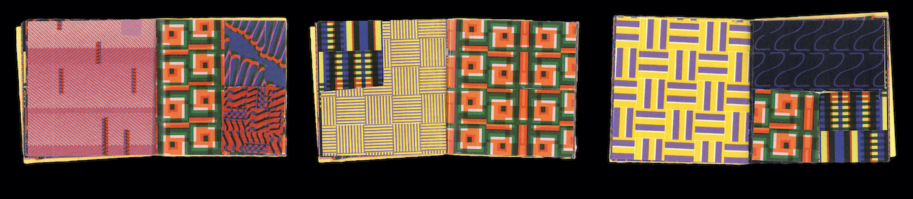
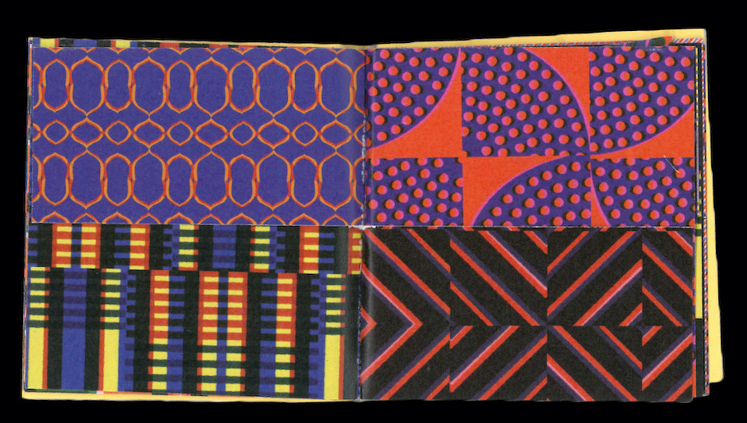
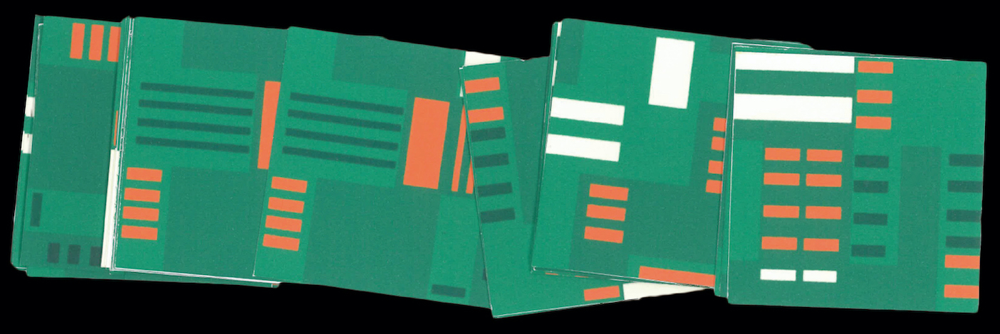
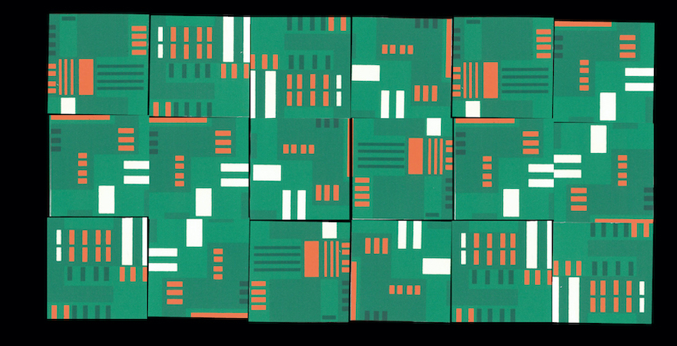
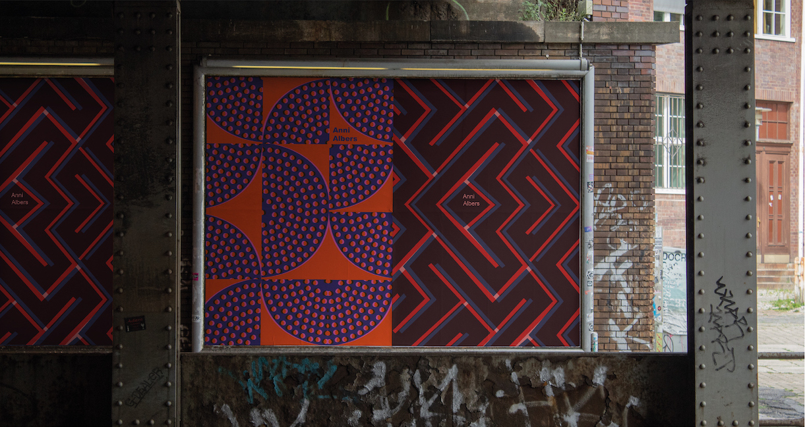

Anni Albers (1899-1994) was a textile designer, weaver, writer and printmaker who inspired a reconsideration of fabrics as an art form, both in their functional roles and as wall hangings. This project, as an artist's book, aims to shed light on how this reconsideration took place by highlighting how her essays influence her artwork.
➔
“De la théorie à la pratique”, editions (108x28cm), set of 8 leaflets that associate the essays and artworks of the artist and theorist: Anni Albers.
 “À plier !”, edition including cut and/or folded pages (15x15cm), mix and match of all the patterns of Anni Albers’ artworks included in the leaflets.
 “Cartes Pasture”, set of 30 cards (10x10cm), interpretation of the work “Pasture”, made by Anni Albers in 1958, in the form of cards allowing a self-appropriation of the artwork by its free recomposition.
Set of two posters (60x80cm).